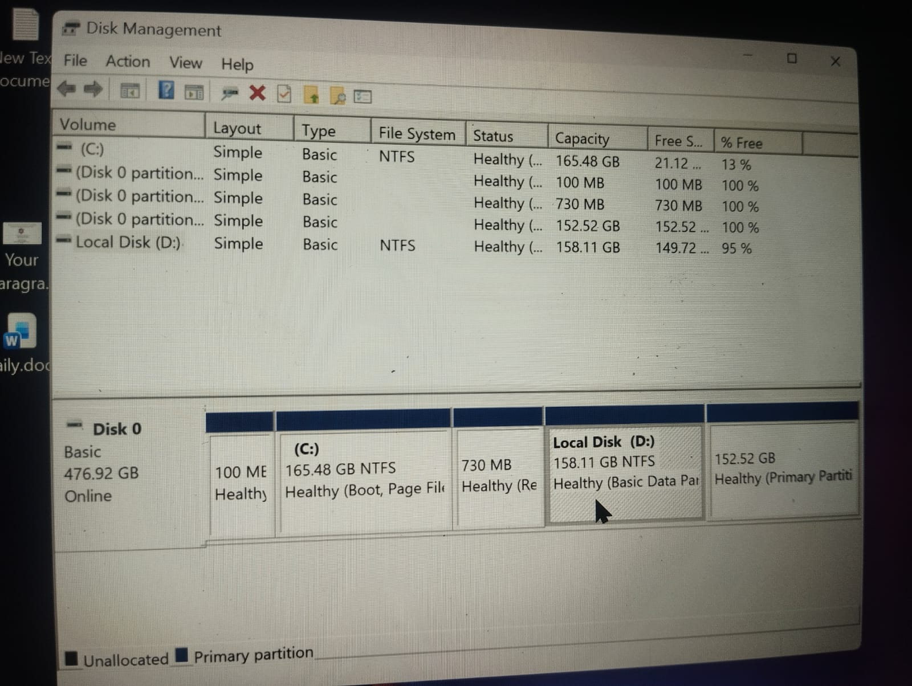
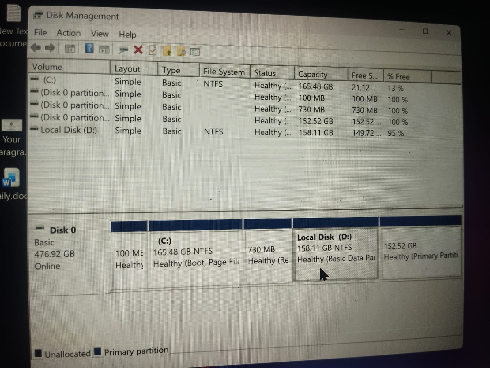
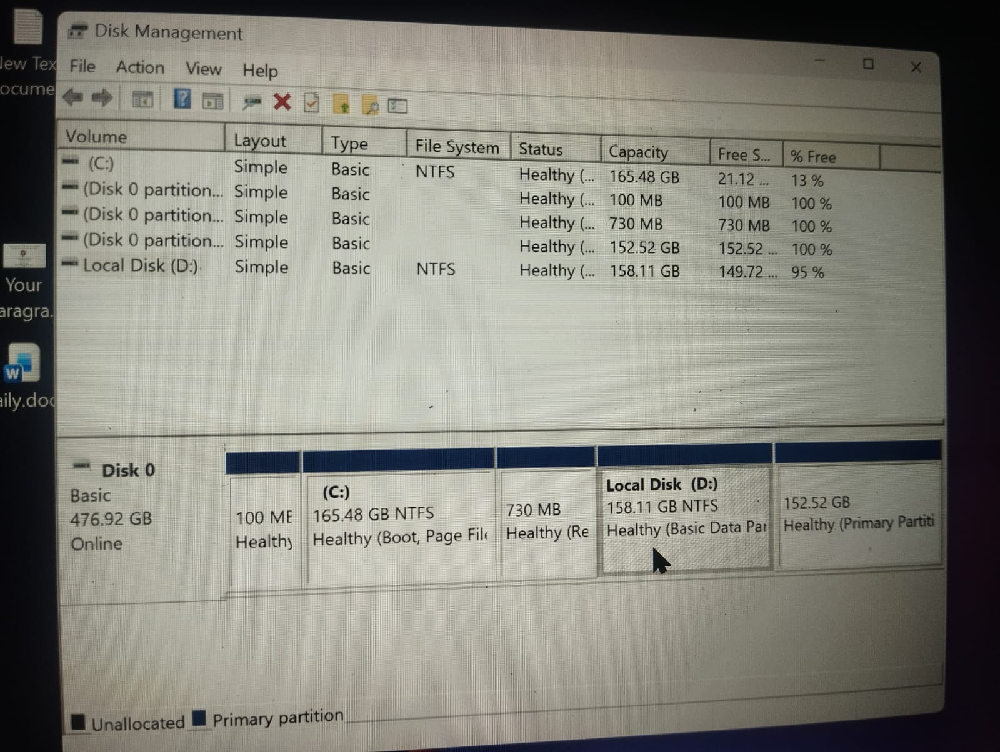
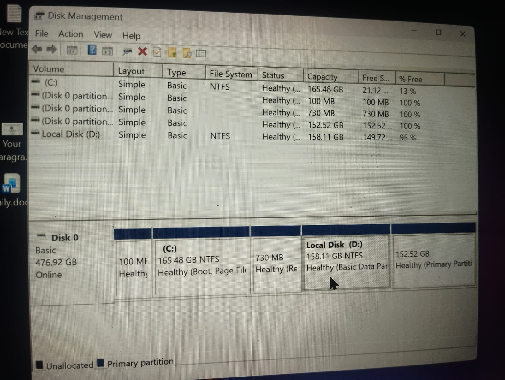
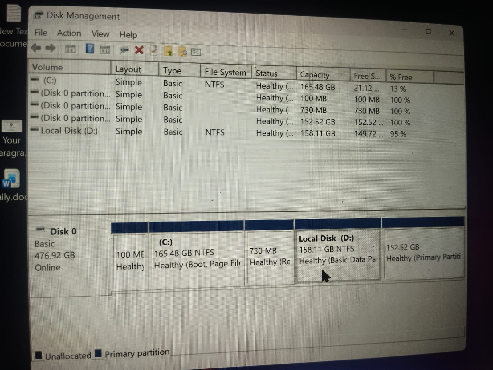
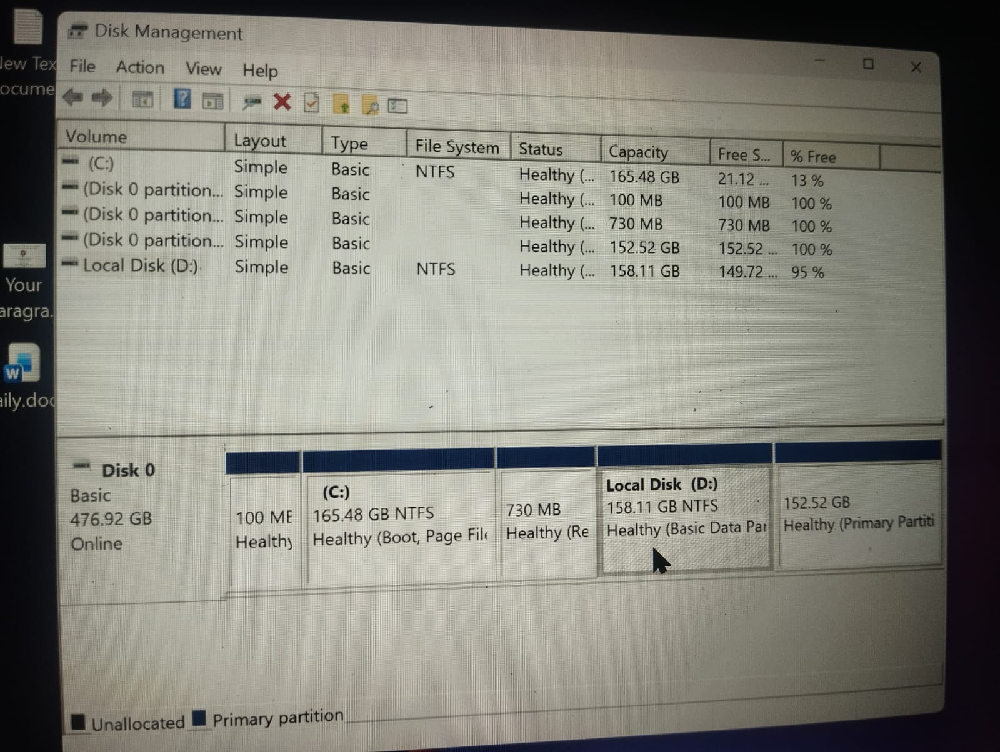
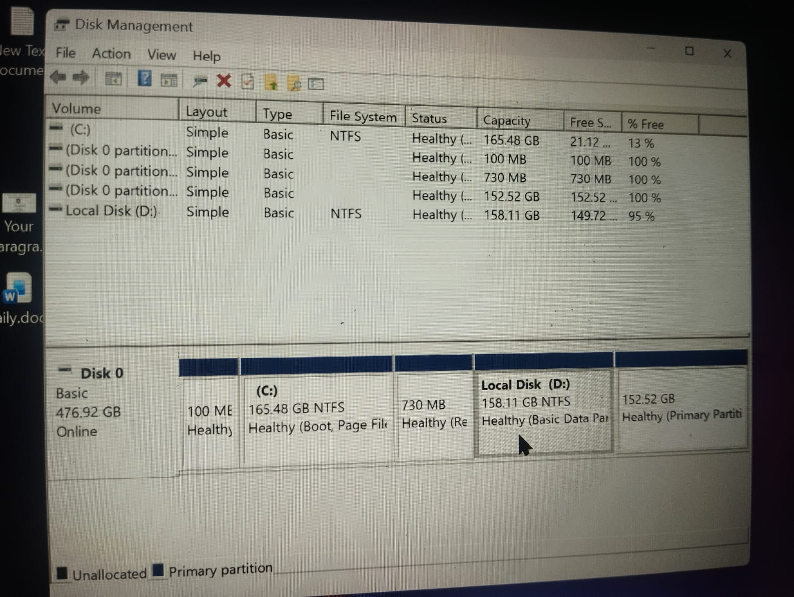
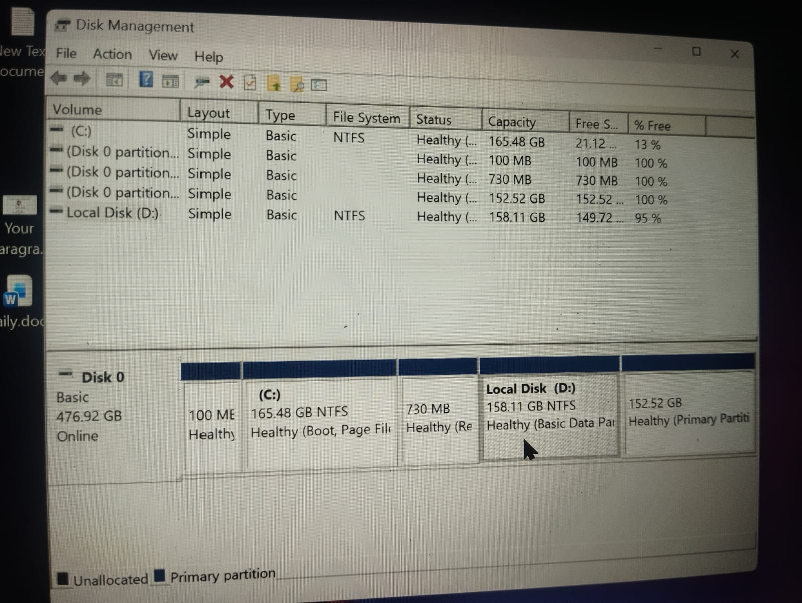
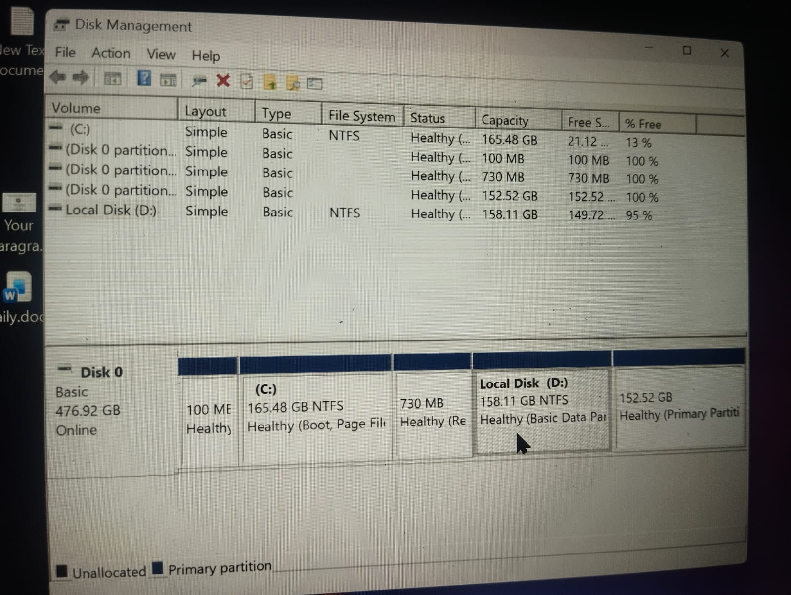

How to Resize a Linux Root Partition
This guide explains how to free up space from a Windows partition and add it to the Linux root partition using Windows Disk Management, MiniTool Partition Wizard, and GParted.
Warning: Partitioning can cause data loss if performed incorrectly. Back up all important files before continuing. Follow each step carefully and avoid interrupting the process while changes are being applied.
Prerequisites
Before you begin:
- Back up your important files.
- Ensure that your computer is connected to a reliable power source.
- Make sure Windows and Ubuntu are installed in UEFI mode.
- Have an Ubuntu live USB available, or use an Ubuntu installation USB.
- Make sure the Windows partition has enough free space to shrink.
Part 1: Shrink the Windows Partition
Step 1: Open Disk Management
- Log in to Windows.
- Open Disk Management.
- Locate the Windows partition from which you want to free up space, such as the
D:drive.

Step 2: Shrink the Partition
- Right-click the target partition.
- Select Shrink Volume.


- Enter the amount of space you want to remove from the partition.
- Click Shrink.

After the operation is complete, the freed space will appear as Unallocated in Disk Management.
Note: In some cases, Windows Disk Management may not be able to shrink the partition by the required amount. This can happen when immovable files are located near the end of the partition.
Part 2: Use MiniTool Partition Wizard if Necessary
If Windows Disk Management cannot free up the required space, you can use a third-party partitioning tool such as MiniTool Partition Wizard.
Use third-party partitioning tools carefully and create a backup before making any changes.
Step 1: Select the Partition
- Open MiniTool Partition Wizard.
- Select the Windows partition you want to resize, such as the
D:drive.

Step 2: Resize the Partition
- Right-click the partition.
- Select Move/Resize.

- Enter the amount of space you want to free, or drag the slider to resize the partition.

- Review the changes carefully.
- Click Apply to begin the operation.


Part 3: Boot into the Ubuntu Live Environment
Step 1: Restart the Computer
Restart your computer after shrinking the Windows partition.
Step 2: Open UEFI Firmware Settings
Open your computer's UEFI Firmware Settings. The exact key or menu option may differ depending on the manufacturer.

Step 3: Change the Boot Order
- Open the Boot section.
- Move the Ubuntu USB drive to the top of the boot order.
- Save the changes and restart the computer.

Step 4: Start Ubuntu Without Installing It
- Boot from the Ubuntu USB drive.
- Select Try Ubuntu instead of installing Ubuntu.
Running Ubuntu in the live environment allows you to resize the root partition safely while it is not mounted.
Part 4: Resize the Linux Root Partition Using GParted
Step 1: Open GParted
- Open the application menu in Ubuntu.
- Search for and open GParted.

Step 2: Select the Root Partition
- Identify your Linux root partition.
- Right-click the root partition.
- Select Resize/Move.

Step 3: Increase the Partition Size
- Drag the partition boundary to use the unallocated space.
- Alternatively, enter the required amount of free space manually in MiB.
- Click Resize/Move.
Step 4: Apply the Changes
- Review the pending operation.
- Click Apply.
- Confirm the operation when prompted.
- Wait for the process to complete. Do not shut down or restart the computer while the operation is in progress.

If the operation succeeds, GParted will display a confirmation message.

Part 5: Verify the New Root Partition Size
After the resizing process is complete:
- Close GParted.
- Restart the computer.
- Remove the Ubuntu USB drive when prompted.
- Boot into Ubuntu.
- Open a terminal.
- Run the following command:
df -h